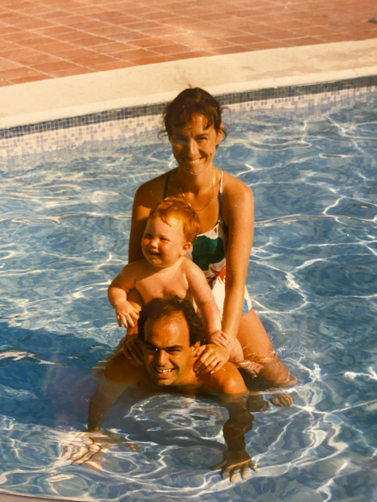
Intro
Chaque événement résume une période marquante. C'est fort résumé, il manque des détails, n'hésitez pas à intervenir si besoin.
-
-
Ougrée → Plainevaux
Les premières aventures dans notre quartier modeste.
-
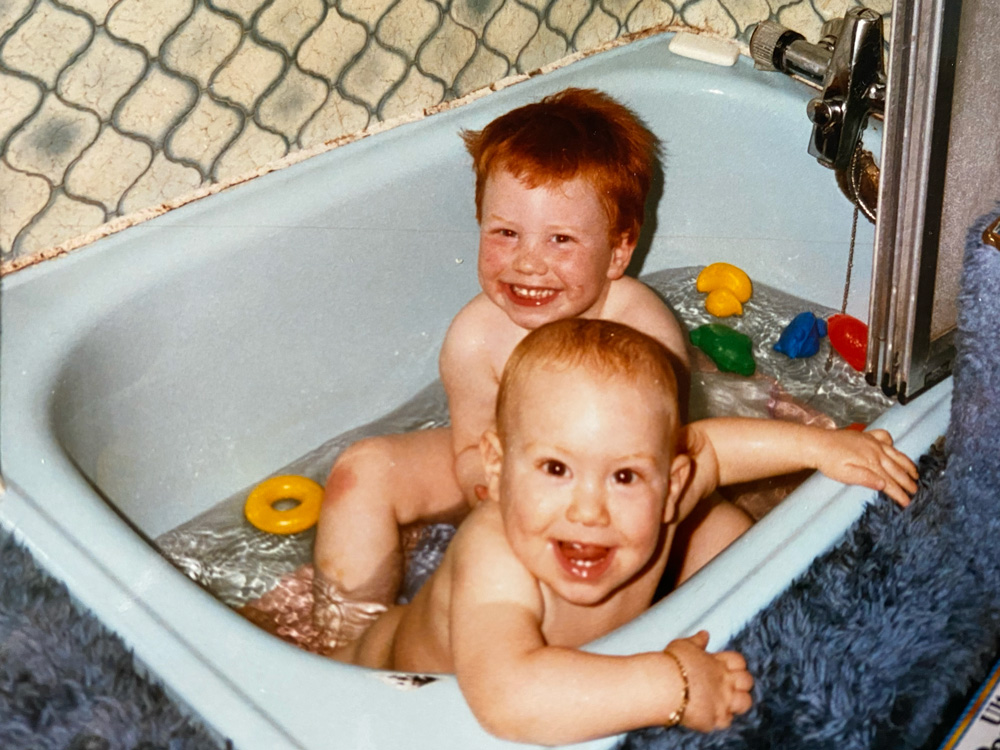
Naissance de Totof
Mon témoin et frère, aussi appelé « Maochi ». Faisait comme son grand frère… enfin, il essayait.
-
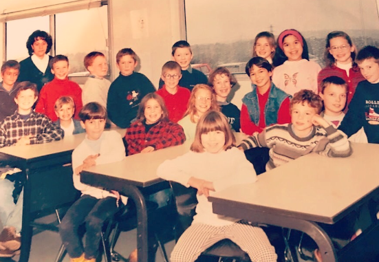
Arrivée à l'école maternelle de Plainevaux
Première rencontre avec Kervyn, Benja, Geai — la dream team.
-
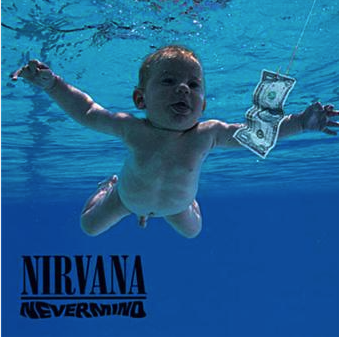
Musique & enfance
Premier CD Jordy ("Dur dur d'être bébé"), Nirvana sort Nevermind (1991) — début d’un amour pour la musique.
-
Découverte musicale sérieuse
MC Solaar (Prose Combat) et The Cranberries (No Need to Argue) : les albums saignés qui n’ont pas pris une ride.
-
Roller & basket
L’époque des Reebok Pump et des rollers. Benja en K2 Fatty Pro, Geai et moi en Bauer FX1.
Kervyn n’avait pas de rollers (à peine à manger).
-
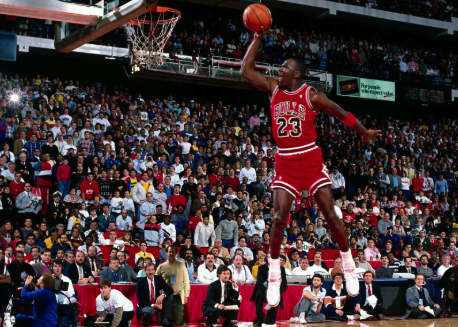
Début du basket & Premier grand voyage à New York
Avec parrain et mamy Maguy. Début des grands voyages et du basket, inspiré par MJ23.
-
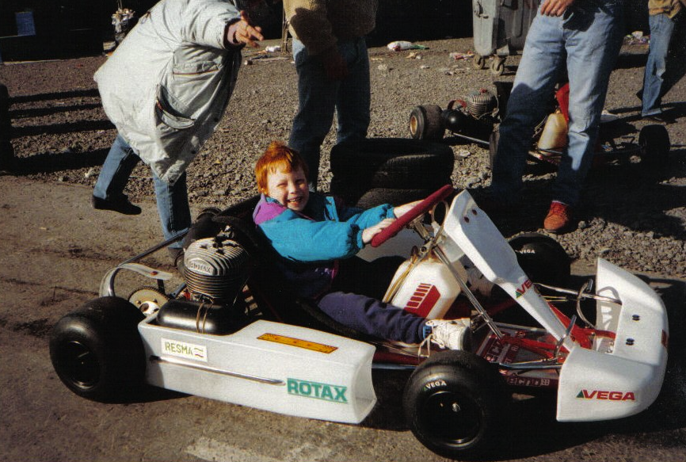
Sports mécaniques, moto & jeux vidéo
Gran Turismo sur PS1 avec Arnaud. Goût pour les sports moteurs grâce à tonton et intérêt pour la moto.
-
Sports d’hiver & changement d’école
Classes de neige : début du goût pour les sports d’hiver. Entrée à Saint Servais Liège, perte de vue des amis d’enfance, choix du basket.
-
Playback en 6ème
Pour financer le ski : Deep Purple — « Smoke on the Water ».
-
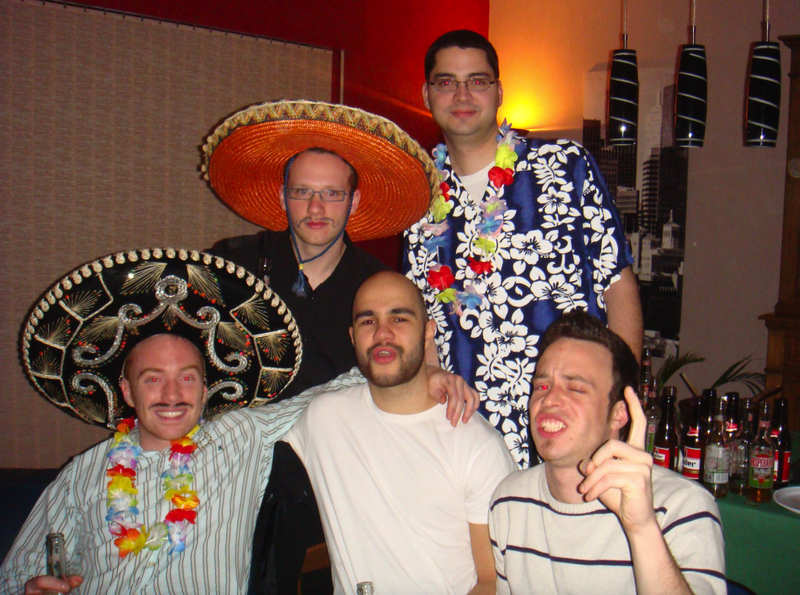
Quentin le seul ami survivant de Saint-Servais (:D)
Rencontre avec Quentin — amitié devenue parrain de sa fille Victoria.
-

Secondaires : basket, skate, metal
Pas de filles, trop timide. Slipknot (2002) : premiers concerts et pogos. Pukkelpop 2003, I Love Techno 2004.
18 ans : première grosse moto, pas de permis — la liberté.
-
Parcours d’études
Saint-Luc (abandon), Beeckman sport (abandon), puis infographie — métier depuis 14 ans.
-
Première vraie histoire d’amour
Premier chagrin d’amour.
-
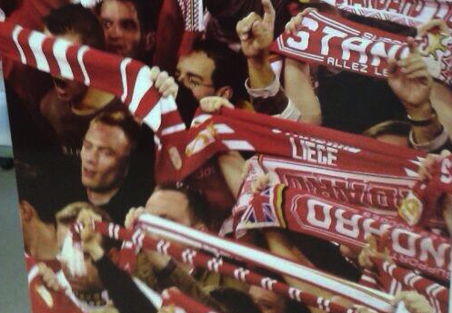
Standard Champions
Clin d'oeil à notre ami ici présent (même si il va dire qu'ils ont 3 fois plus de titres)
-
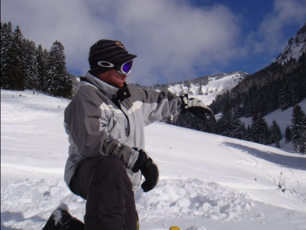
Sports d’hiver à Châtel
Avec mon frère — retours plusieurs fois. Deuxième grande relation, premier aménagement hors de chez mes parents (~4 ans).
-
Premier boulot chez LWS
Le début d’une belle histoire professionnelle qui dure.
-
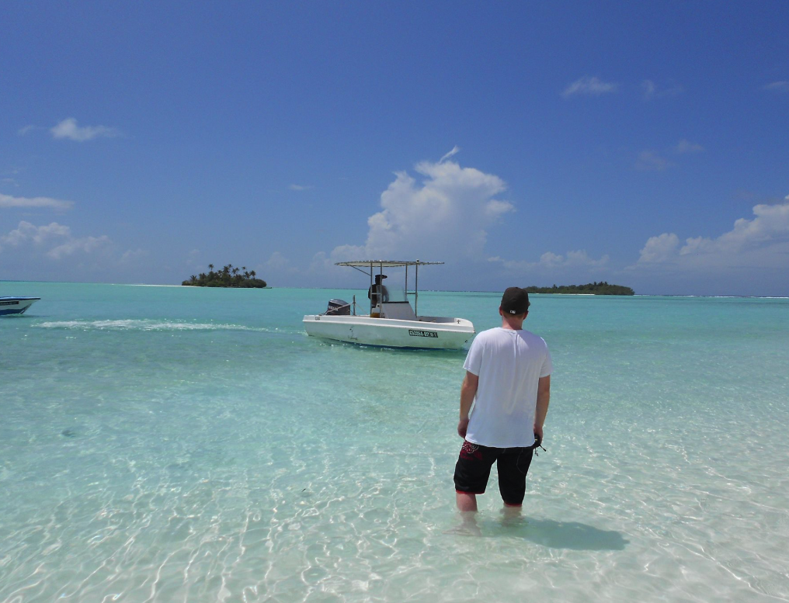
Voyage aux Maldives
Séjour paradisiaque pour rejoindre mon frère.
-
La vie continue après la rupture, show must go on.
Le Carré à Liège, tous les vendredis, un classique depuis 2006.
-
Premier appart à Liège & nouvelle histoire sérieuse
Beaux voyages, vie en couple, jusqu’en 2019.
-
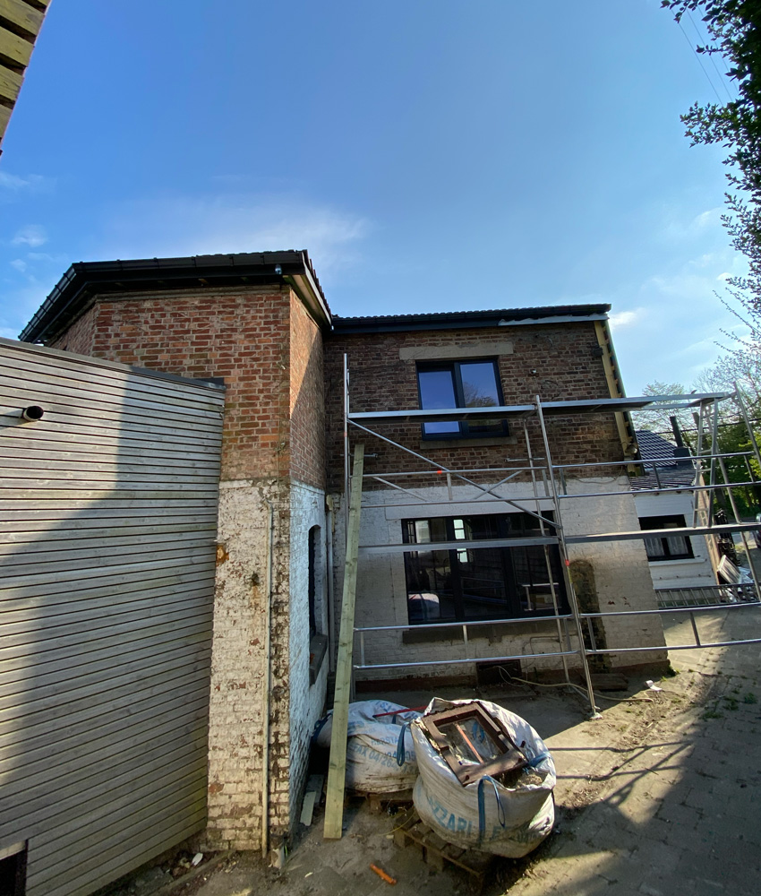
Golf GTI & achat maison à Plainevaux
Le chantier du siècle : tout à refaire, mais quelle aventure.
-

Naissance de ma filleule Victoria
Fier et reconnaissant d’être son parrain.
-
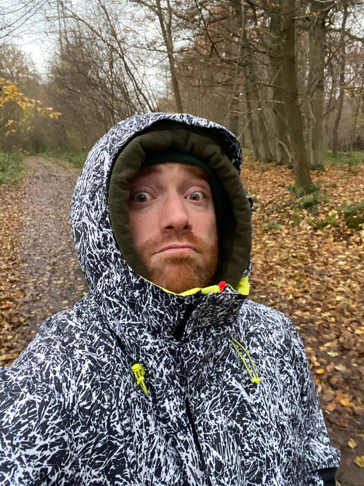
Covid & grosse déprime
Seul, sans basket, sans sorties. Tinder & plans foireux.
-
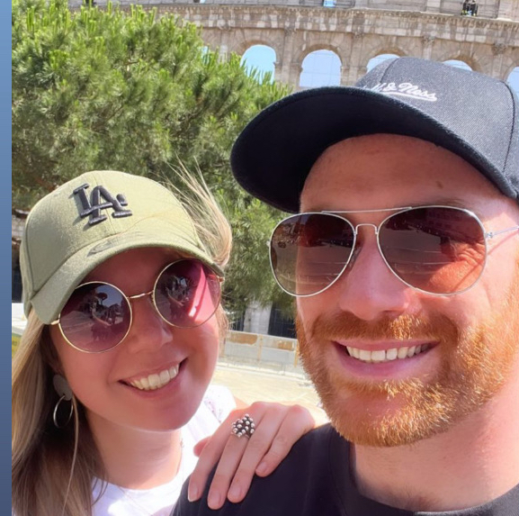
Rencontre avec ma future femme
Marché de Noël, rencontre via Facebook, passions communes — rayon de soleil.
-
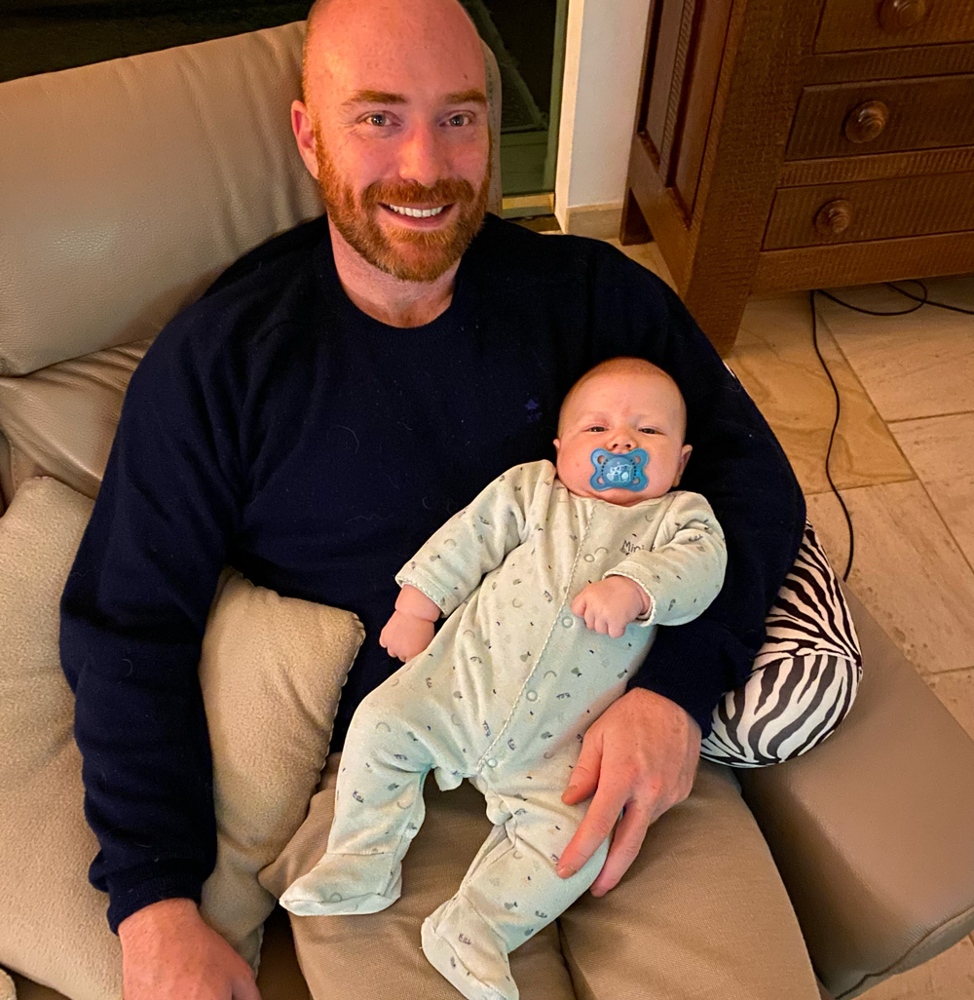
Naissance de mon filleul Émile
Fils de Totof. Nouveau rôle de parrain, toujours aussi fier.
-
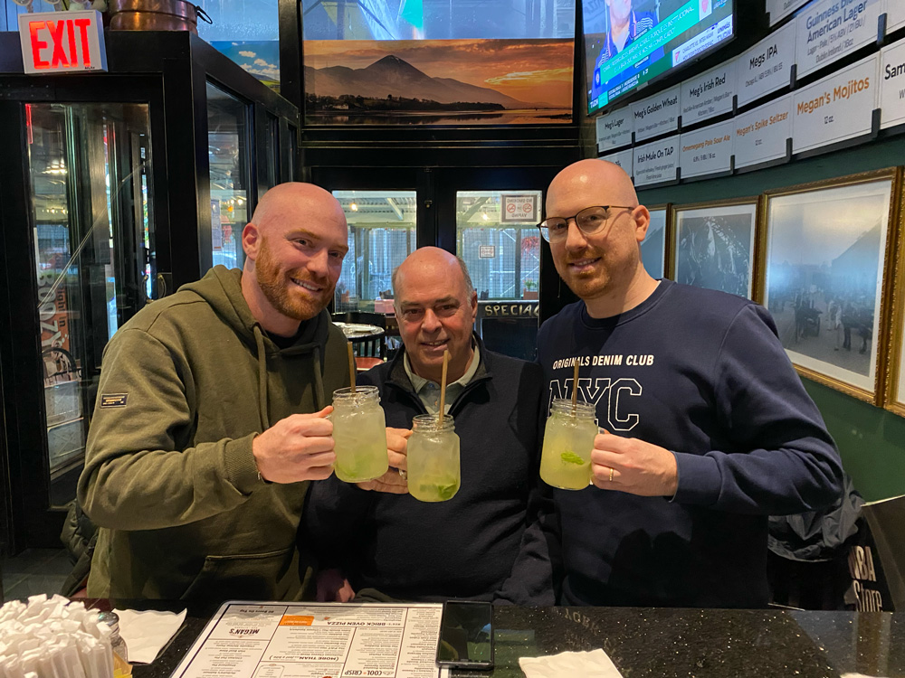
New York entre hommes
Avec papa et Totof.
-
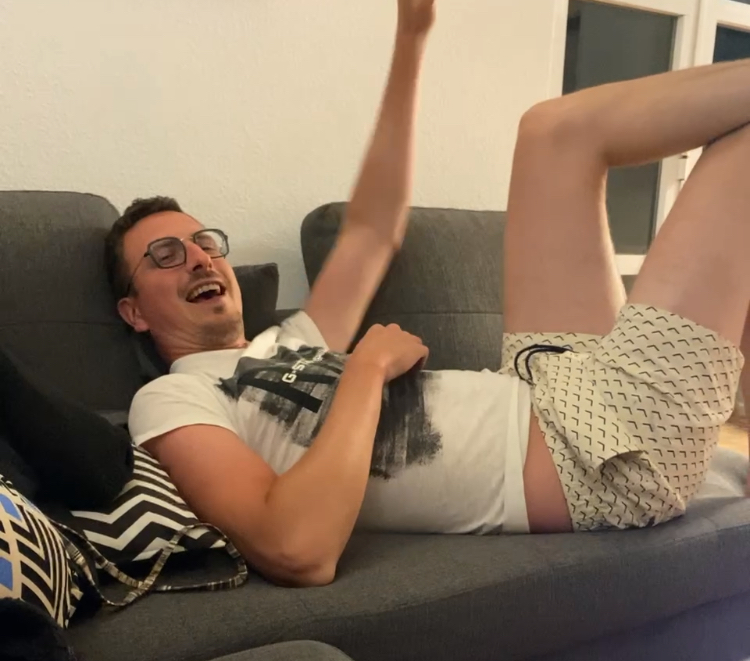
Voyages & amitiés
Avec Kevin et Fiona au Portugal. Rhum coca, Uno et beaux paysages.
-
Chez Carole à Saint-Nicolas
On espère emménager dans la maison à Plainevaux début 2026.
-
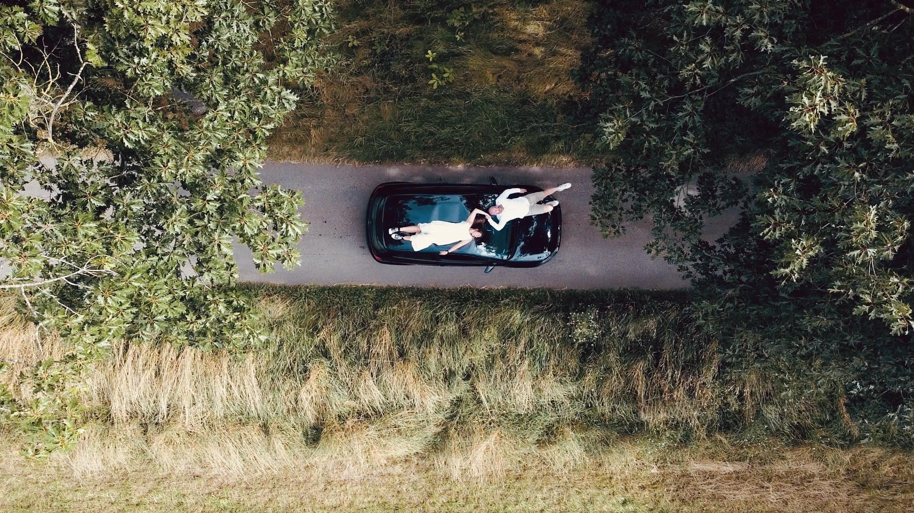
Mariage
Le grand oui, entouré des proches, la fête, les sourires et le début d’un nouveau chapitre.